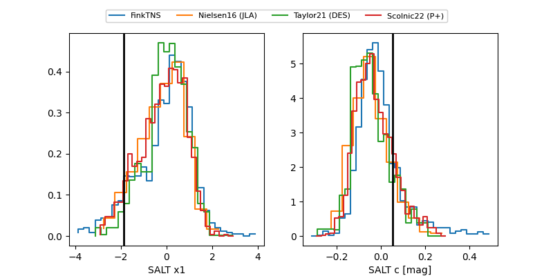

FINK: ZTF25abocboo
Lasair: ZTF25abocboo
ALeRCE: ZTF25abocboo
TNS: 2025wwb
YSE: 2025wwb
ZTF25abocboo (ztf,fink)
2025wwb (tns,yse)
equatorial (ra, dec) = (348.5450,-1.50262)
galactic (l, b) = (76.5386,-55.35835)

last ztfg=20.23, ztfr=19.97
16 ztfg, 16 ztfr detections